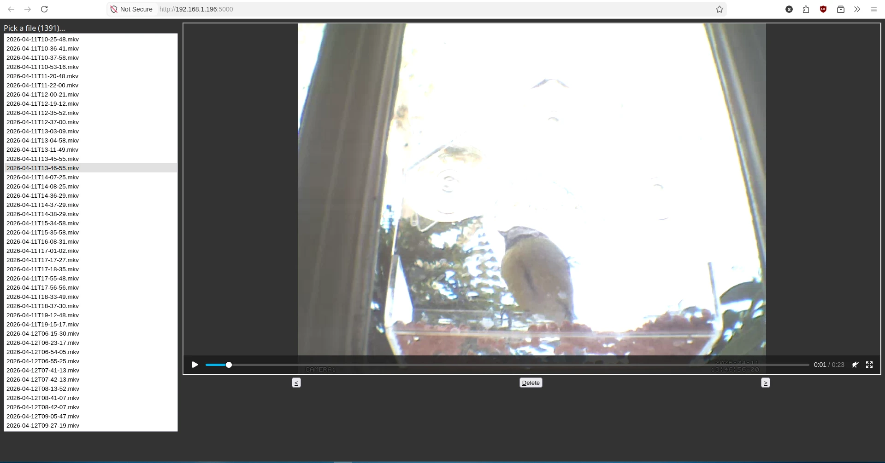

Building a bird camera trap with a Raspberry Pi & FOSS tools
MicoSD Cards Hate Him! Fill up all available space with bird clips with this one simple trick
Earlier this year I set up a bird feeder outdside my flat. After some days of wondering if I’d chosen the wrong food or location, the pink suet pellets gradually began to disappear. Unfortunately, I was rarely there to see it - the small windows at the rear of my flat don’t make for an ideal nature-gazing spot.
Incidentally, I had a Raspberry Pi 3 tucked away in a cupboard that hadn’t been booted up since Spotify took away one of its login APIs and raspotify stopped working for me. (It appears to be fixed now!) I’m not sure what train of thought connected the two facts, but once it was raised, I knew it was my highest-priority project: bird webcam.
Weirdly, I can’t find the blog post that I was using as a guide, but it described a pipeline that started with Motion, an open-source motion-detection program, and ended with uploading clips to Dropbox and sending phone notificiations. I didn’t need any of that cloud stuff, so just stuck to the first half of the guide, which boiled down to installing and configuring Motion.
There are plenty of guides online for installing/configuring Motion on a Raspberry Pi, so I won’t be writing a comprehensive tutorial - I’ll just describe my setup process and cusomizations.
Setting it up
Installing Motion on the Pi is surprisingly simple
(sudo apt install motion). The difficulty I faced was in
installing the right packages/drivers for the webcam. I was able to get
a cheap, unbranded USB plug & play webcam working with just the
preinstalled v4l2 drivers, but was not able to get my
slightly higher quality (720p 😅) Logitcech webcam working. fswebcam
is a useful CLI utility that can help you confirm whether your webcam is
setup correctly, but you can also navigate to
http://192.168.1.{your raspberry pi ip}:8080 to check your
webcams in real-time from another device. (The web interface can be
disabled if you don’t trust your housemates ;))
Configuring motion isn’t too complicated - you just open
/etc/motion/motion.conf, and tweak anything from the
defaults. I was mostly interested in increasing the resolution and
framerate of the output videos. (I also changed the
movie_filename to %Y-%m-%dT%H-%M-%S so they
would be ordered properly in my file viewer.)
Once you’re happy, run sudo systemctl start motion to
start it up in the background, and wait for a bird to appear… at last, a
bird clip!
Unfortunately, most of my clips were being triggered by the leaves moving:
But this was somewhat-easily fixed by tweaking the
motion config and defining an image mask to ignore any
movement in the area of the image where the leaves were.
Suffering From Success (i.e. lots of clips)
Initially, I checked the clips by logging into my Pi via WinSCP,
copying all the files, and deleting ones that didn’t contain birds. I
then started using python3 -m http.server to load the
videos faster, but still used FTP for deletion, which was a bit slow.
Once I had a few hundred files, and a few dozen added every day, I
finally caved and built a dashboard for faster viewing & deletion of
clips.

It’s a very simple plain HTML page with a tiny amount of JS to drive an iframe pointing at the video. You use the up/down arrow keys to move between files, and (D) to delete one (after showing a confirmation dialog). An equally simple Flask backend has endpoints to list the files & delete a file. The dashboard allowed me to look through the day’s clips much more quickly!
Eventually, the rate of file creation outpaced my ability to filter and enjoy all the bird clips, and the directory containing the files was growing at a fast rate for my measily 16GB MicroSD card, so I switched off the motion service after about a month. Regardless, I would consider the project to be a big success!
The Raspberry Pi now hosts a Navidrome server, but there’s probably enough spare CPU cycles to run motion at the same time. I might also try out BirdNET, a sound classifier model developed by Cornell, but judging by the clips from April it’ll be 99% blue tits.
Speaking of Cornell bird tech, have you tried the Merlin Bird ID app?? You won’t regret it - it’s basically Pokémon Go in real life (although you don’t get to keep the birds)
Return to index.